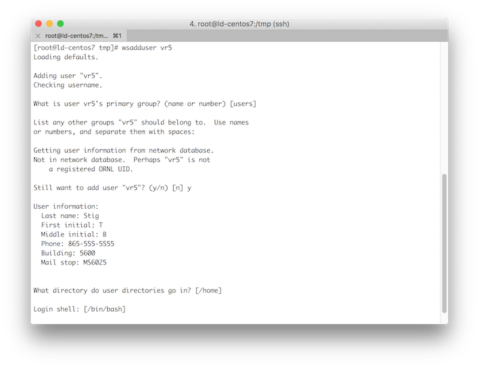

Privileged Access to Unix/Linux Servers & Clusters in the Workstations (formerly RAN) Protection Zone (Quick Start Guide)
Privileges Cleanup
1. Review the list of systems where you have privileged access.
- [ ] The Privileged Access Report will show you where you have privileged access on servers and identify the overall system administrator in case you need assistance switching to a secondary account.
- [ ] Remove your privileged access (sudo and alternate root accounts) from all Workstations PZ servers where it is not absolutely needed.
- [ ] If you need only a limited set of privileges on a server—but not full root—remove your full privileges and grant access to the limited set of commands with sudo rules.
- [ ] If there are remaining Workstations PZ servers where you need full root privileges, continue with the steps below.
Preparing Your Account
1. Obtain a secondary UCAMS account dedicated to administering servers in the Workstations PZ.
- [ ] You can request a secondary UCAMS account by contacting the Solution Center (solution@ornl.gov or 865-241-6765). Please indicate that you need the “Unix/Linux for RAN” function under the “IT Privileged Access” resource as part of this request.
- [ ] If you already have a secondary account, request the “Unix/Linux for RAN” function under the “IT Privileged Access” resource in UCAMS for that account and follow the instructions.
- [ ] You might need to respond to multiple notifications to resend your UCAMS password.
2. Request a DES exception for any systems that cannot enforce the privileged access policy.
- [ ] Request a Smart Card Authentication Enforcement Policy - Linux Privileged Access exception through the Device Exception System.
- [ ] Include a detailed business reason as to why the system cannot meet the policy.
3. Test your access to the Workstations PZ jump servers.
- [ ] Configure your SSH client to use SmartCard authentication when connecting to the Workstations PZ jump servers (ranlogin01.ornl.gov / ranlogin02.ornl.gov).
- [ ] Test your access using your Workstations PZ privileged account.
4. Add your secondary account to every Workstations PZ server where you require privileged access. You may need the system administrator to assist with these steps.
- [ ] Login to the server where you need privileges.
- [ ] Elevate to root using ‘su -‘ or ‘sudo -i’ as appropriate for your configuration.
- [ ] Run: wsadduser
- [ ] When prompted that the user is not in the network database, type y to continue and manually enter the user details. 
Using Your Account
1. Use your secondary account for system administration.
- [ ] Use a Workstations PZ jump server (followed by an SSH to the target server with your password) or SSH directly to the target server using SmartCard authentication. Use your secondary account in both cases.
- [ ] Your secondary account will have full sudo privileges.
- [ ] If you need to SSH in directly with a root account, your SSH connection most originate from a Workstations PZ jump server.
- [ ] root to root SSH is allowed using SSH keys if absolutely necessary. It is recommended that you use host restrictions (e.g. a from section) within the authorized_keys file.
- [ ] It may take up to 60 minutes for the local privileged access group to refresh with newly added users.
To force an immediate refresh of your system configuration:
/var/wscfengine3/bin/cf-agent -K
2. Cleanup privileged access assigned to your primary account.
IMPORTANT: Do not follow these steps until after you have tested that your secondary userid has full privileges on the target server.
- [ ] Remove full sudo rights form your primary userid or ask the system administrator to do it for you. This may involve removing the user from the sudo or wheel groups.
- [ ] It is recommended that you remove any alternate root accounts that are associated with your userid and use sudo instead.
- [ ] If you have any remaining primary or alternate root accounts that sync the password with your UCAMS userid (e.g. they contain [usr] in the GECOS field) change the username in the bracketed string to be your secondary userid.